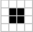

The game starts with a 2-D grid that consists of cells in either an alive or dead state. The cells has eight cells that are in close contact with it. The game has what is called ticks that applies to each cell with these four rules:
- Any live cell with fewer than two live neighbors dies, as if caused by underpopulation.
- Any live cell with more than three live neighbors dies, as if by overcrowding.
- Any live cell with two or three live neighbors’ lives on to the next generation.
- Any dead cell with exactly three live neighbors becomes a live cell.
-
Still Life
- The Block 
- The Bloat
.png)
- The Loaf
.png)
- The Beehive
.png)
Still life is basically stable patterns that satin in one state don't change. They stop other patterns or keep unstable patterns stable.
-
Oscillators
- The Blinker
.png)
- The Beacon
.png)
- The Toad
.png)
- The Pulsar
.png)
Oscillators are more complicated patterns,and will cause a chain of unstable patterns by bumping into other stable patterns
-
Gliders and spaceships
- Gliders
.png)
- Spaceships
.png)
The spaceship is a pattern that moves, returning to the same configuration but shifted after a finite number of generations. The glider is an example of a simple spaceship and its generations each consist of five live cells. The glider has a period of four and moves diagonally one cell every four generations. It moves at one-quarter the speed of light
-
Guns
- Guns
.png)
Guns are repeating patterns which produce a spaceship after a finite number of generations. The simplest gun, called the Gosper glider gun, produces a glider every 30 generations.